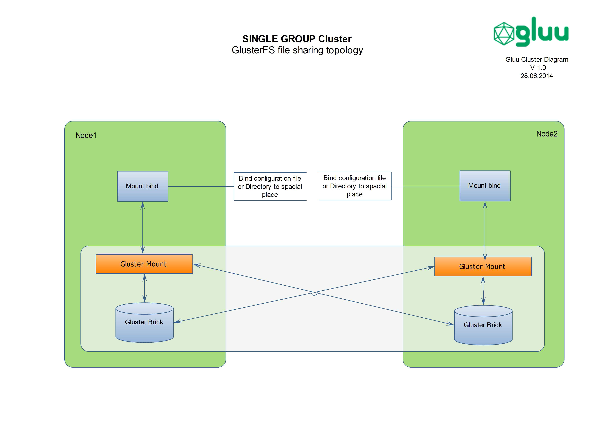

Single Group
Logical network diagram of “SingleGroup” is presented in Figure 1
Advices
-
Inside “SINGLE GROUP” the quantity of active nodes with all in one installation can be no more than 5 nodes. If there will be necessity to increase quantity of nodes, then must be used “MULTI GROUP” approaching.
-
“SINGLE GROUP” approaching is better to use inside of one data center or it can be used in different datacenters where quality and HA of network inter connection is high.
-
For easy and fast installation of IDP environment in every node, inside of cluster can be used single Linux distribution package.
 Figure 1
Figure 1
Technologes
The following Technologies must be used to achieve “SINGLE GROUP” clustering solutions.
Loda Balancer
- Distributing workloads across multiple Nodes direct to apache servers in top of cluster can be used any hardware load balancer. The HA of load balancers are not described in current document.
Mod_jk
- For distributing workloads from apache server between Tomcat servers must be used mod_jk connector with load balancing mechanism.
OpenDJ
- For OpenDJ - LDAP replication must be used multimaster synchronization mechanism. The replication topology and suggestions have been taken from official site of Opendj. LDAP Replication Topology for “SINGLE GROUP” is presented in Figure 2.
{kind=link}
 Figure 2
Figure 2
In case of using more than 5 nodes, must be used “MULTI GROUP” solution where will be used stand alone replication servers. As total number of replication connections will impact the scalability of cluster solution. According Equation Totalconn = (NRS * NRS-1)/2 + NDS Where Totalconn is total number of replication connections, NRS is the number of replication servers, and NDS is the number of stand-alone directory servers.
Memcached
- In order to decrease database loads and network requests, following technologies must be used to connect memcached.
a) IDP Memcached Storage Service (Created and last modified by haimm@idp.protectnetwork.org on May 17, 2013) for IDP
b) Native SP Storage Service (Created by Scott Cantor, last modified by Lukas Haemmerle on Mar 06, 2014)
Twemproxy
- To share the keys stored in memcached between clustered nodes and to avoid using sticky session sharing mechanism, “TwemProxy” proxy server must be used. The information sharing between memcached inside of nodes will be distributed using consistent hashing algorithm. (TwemProxy is a fast, light-weight proxy for the memcached protocol. Twemproxy was primarily developed to reduce open connections to Twitter cache servers.). TwemProxy logical connection topology for “SINGLE GROUP” is presented in Figure 2.
 Figure 3
Figure 3
TwemProxy detailed connection topology between two nodes for “SINGLE GROUP” is presented in is presented in Figure 4
 Figure 4
Figure 4
GlusterFS
- To share configuration or static files between nodes must be used GlusterFS technology. GlusterFS logical connection topology for “SINGLE GROUP” is presented in Figure 5.
 Figure 5
Figure 5
- GlusterFS detailed connection topology between two nodes for “SINGLE GROUP” is presented in Figure 6. The files and directories inside of GlusterFS mount point can be mounted to the appropriate place in local node with bind option in mount utility.
 Figure 6
Health Check Script
- Heath check script must check health status of
1) System components. According checking algorithm appropriate service can be stopped or isolated from cluster, using firewall rules inside of Nodes. (Checking algorithm must be provided in other document)
2) Integrity checking of files inside of mount point of GlusterFS. Collecting centralized integrity checking information can help to monitor and determine the failure of GlusterFS inside of node.
3) The status of component which is responsible for restarting a service in current node. (Can be implemented in LDAP or in status file inside of GlusterFS)